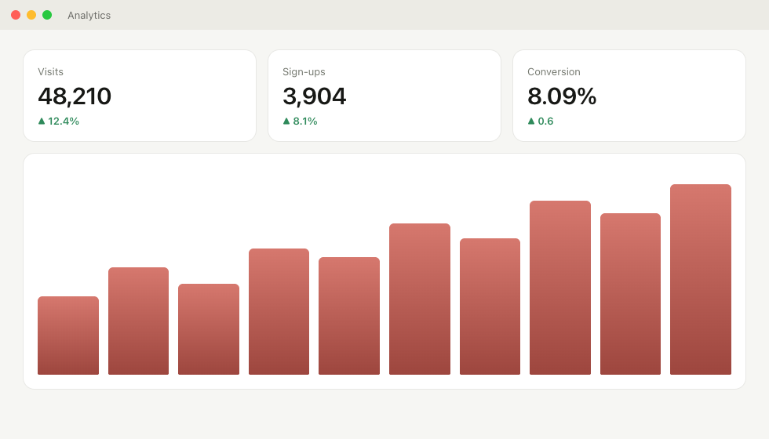
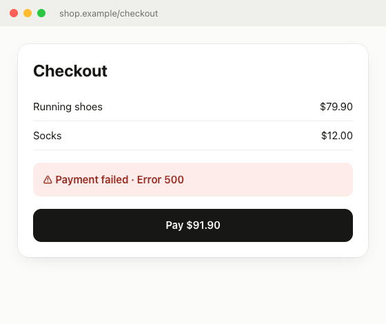

With Terminal · recommended
curl -fsSL https://raw.githubusercontent.com/Frasca-99/gaveta/main/scripts/get.sh | bash
Downloads the latest version, puts it in Applications and opens it, without the macOS warning.
Mac app · free · open source
Every screenshot you take lands in a drawer at the edge of the screen. Pick several and paste them all at once, with a single ⌘V.
macOS 14 or later · Apple silicon and Intel



How it works
01 · Take
The usual way, with ⌘⇧4. It flies into the drawer at the edge of the screen instead of piling up on the Desktop.
02 · Open
The pointer at the right edge pulls a handle, and the glass drawer slides out, taking the color of what is behind it. Or ⌃⌥G.
03 · Pick
A click copies one screenshot. ⌘-click, ⇧-click or Select all pick several.
04 · Paste
Copy all, and a single ⌘V pastes them in the order you took them: into a chat, an email, a ticket.
Details
Glass
The Liquid Glass of macOS 26: the drawer takes the color of what is behind it and all but disappears over your work.
Elastic handle
Drag the handle to widen the drawer. It bends with your speed, gives at the limit and swings back.
Whole cards
Every screenshot shows whole, never cropped. The card under the pointer opens up for you to see.
No friction
Deleting with the X never stalls: the card falls and the next one is already there.
Drag
Take one or several screenshots to any app or folder.
Only on your Mac
No internet, no account. Your screenshots stay on your Mac.
Install
With Terminal · recommended
curl -fsSL https://raw.githubusercontent.com/Frasca-99/gaveta/main/scripts/get.sh | bash
Downloads the latest version, puts it in Applications and opens it, without the macOS warning.
Downloading the zip
Download Gaveta.zip and drag it to Applications. The first time: System Settings → Privacy & Security → Open Anyway.
Building it
git clone https://github.com/Frasca-99/gaveta.git && cd gaveta && scripts/install.shWith Swift installed. An app built on your Mac opens without a warning.